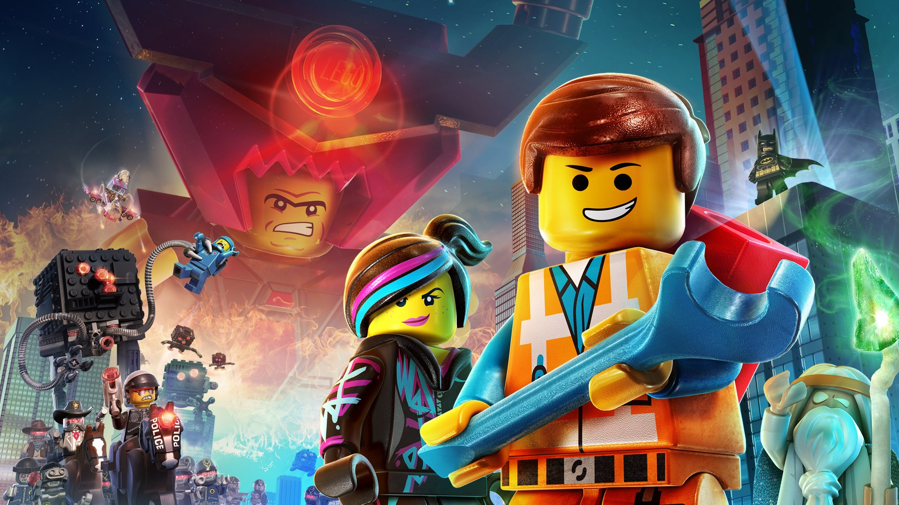

Geçtiğimiz 10 Yılın En İyi Animasyon Filmleri
Animasyon sınırsız özgürlük ve sadece hayal gücünün sınırlarıyla yapılan muhteşem bir görsel sanat. 40'lı yılların Disney filmlerinden bugüne yarım asırdan fazla oldu bu sanat dalı iyice gelişti ve ticarileşti. Bu ticarileşmenin içinden sizin için geçtiğimiz son 10 yılın en kaliteli ve başarılı animasyon filmlerini belirledim.
The Wind Rises (2013)
Büyük usta Hayao Miyazaki'nin son eseri olan The Wind Rises bir animasyon filmi olarak çok nadir görülen bir iş yapıyor ve bir biyografi filmi oluyor. Japonya'nın deha uçak mühendisi olan Jiro Horikoshi'nin hayatını konu alıyor. Tamam gerçekçi bir konuyu ele almasına rağmen bazı sekanslar içinde Jiro'nun hayal dünyasına Miyazaki öyle bir girmiş ki bundan daha iyi görsel olarak yansıtılamaz idi bir dehanın zihini.
Coco (2017)
Coco anlatılmaz duyguların filmi. Bir insanın varoluşunun yegane kaçınılmaz sonu olan ölümü konu alan film Meksika mitolojisi ve temasını da çok iyi kullanmış. Müziğin birleştirici pozitif gücü geleneksel bir aile içi mesela Coco'nun bir animasyon olarak bu kadar çeşitli konuları ele alması anca pixar tarafından altından kalkılabilir idi.
Isle of Dogs (2018)
Renk filmlerinden tanıdığımız yönetmen Wes Anderson'ın ikinci animasyon denemesi olan Isle Dogs her ne kadar oscar ödülünü kazanamasa da stop motion tekniğini beyaz perdeye en iyi uyarlayan film idi. Köpekler, Japon üzerinden çevrecilik mesajlar veren filmin konusu Japon hükümetine geçen faşist yönetimin köpekleri hastalık yaydıkları yalanıyla bir adaya sürgün etmesiyle başlıyor. Bir çocuk eski evcil köpeğini kurtarmak için bu adaya yolculuk ediyor.
Park Chan-Wook
Yükselen Kore sinemasının en büyük iki yönetmeninden biri olan Chan-Wook yazdığı ve yönetttiği Oldboy filmiyle Kore'nin tıpkı Japon sinemasının bir zamanlar yaptığı gibi dünyaya mal olabilecek bir ekol oluşturabileceğini kanıtladı. Hitchcock'un Vertigo'sunu izleyip başladığı kariyerine İntikam Üçlemesi ve Thirsty gibi filmlerin yanı sıra Handmaiden adlı tüm zamanların en orijinal psikolojik gerilim filmini ekledi.
Inside Out (2015)
Eleştirmenler tarafından çok sevilen Inside Out bir insan olmayı çocuklara ve yetişkinlere özetleyen çok başarılı bir yapıt. İyi düşünülmüş psikoloji ve duyguların insansı tezahürleri çok iyi. İnsan hafızası ve bunun yetişkinliğe evrimi büyülü şeylere inan masum beyinden acı duyan bir varlığa geçiş. Hayatın sadece keyif ve zevklerden değil bazen sadece ağlamanın üzülmenin bile insana iyi geleceğini çok yalın bir biçimde vermiş.
Klaus (2019)
Yılın son büyük animasyonu olan Klaus animasyon stüdyosu Spa'nın yaptığı ve parasını Netflix'in verip yayınladığı bir animasyon. Burada olmasının pek çok nedeni var batılı olupta 2 boyutlu animasyon geleneğini yaşatmaya çalışması daha önce noel ve yılbaşına bu derece farklı bakmış olan yapıt olmaması gibi nedenler. Tüm hokus pokusu aradan çıkarıp gerçekçi bir büyü yakalaması ve mucizelere açık kapı bırakmasıyla kalbimde yeri ayrı oldu. Aynı zamanda çok açık ve güzel bir alt metini var.

The Lego Movie (2014)
Warner Bros hiç bir zaman rakibi Disney'e karşı animasyon filmleri sektöründe bir karşılık veremede ta ki 2014'e kadar. Lego Movie yapılmış en başarılı animasyonların arasına adını kesinlikle yazdırdı. Eğlenceli şakalardan kapitalizm eleştirisine ordan da özgür irade ve platonun mağara alegorisine değinmek her baba yiğidin harcı değil.
Song of the Sea (2014)
Yeni nesil animasyon yönetmenleri arasında kendini ön plana çıkaran hatta benim batının Miyazaki'si olabilecek potansiyeli gördüğüm Tomm Moore tıpkı Spa stüdyosu gibi 2 boyutlu geleneksel çizgi romanın batıdaki nadir temsilcilerinden. Kendisine has sanat dizaynıyla genelde kelt mitolojisini işleyen yönetmen bu filminde de bir kızın özüne dönüşünü ve erkek kardeşinin onu korumaya çalışmasını izliyoruz. Pagan temalı bu filmde ilginç hristiyan sembolleri de kullanılmış. Bu güzelim film dururken Big Hero 6'e ödül veren akademiye ediyim.
Spider-Man: Into the Spider-Verse (2018)
Kapitalizmin seri üretimindeki aptal süper kahraman filmlerinin ardından Sony'nin Spider-Verse'ü bir kahramanlık nedir hatırlattı. Çizgi roman estetiğini animasyon dünyasında bir devrim yaratarak yakalayan Spider-verse kazandığı Oscar'ı sonuna kadar hak ediyor.
The Painting (2011)
Bir Fransısz animasyonu olan The Painting veya Türkçe çevirisiyle Mutluluğa Boya Beni. Bir ressamın yarım bıraktığı bir tabloda geçen hikaye ırkçılık özgürlük aşk gibi konuları Fransızca'nın şiirselliğiyle çok güzel işliyor. Üst boyut alt boyut gibi kozmik konular oldukça gerçekçi bir şekilde izleyeni düşünmeye itiyor.
Garden of Words (2013)
Japonya'nın yeni dehası Makoto Shinkai'nin ustalık eseri olarak gözüken Garden of Words(Kimi no Wa) aşkı Japon folklörüyle birlikte harika görsellikle seyirciye veriyor. Bunun üstüne filmin harika bir kurgusunun da olduğunu söylemem gerekiyor. Şimdiden hollywood film uyarlamasının haklarının satın alınmasına şaşmamak gerek.
Önerilen Yazılar
-

Using Repetition and Patterns in Photography.
-

Health Benefits Of Morning Dew.
-

The Art Of Visual Storytelling.